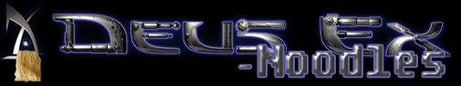

Kawachan
About Me
I'm Kyoufu Kawa, Kawachan to the friends, I'm a 320 years old tentacle demon and really like game engines that are easily modded.
I made a name in the Romhacking scene by writing EliteMap (a Pokémon map editor) and various little tools to go along with it.
I'm also rumored to be a sexaholic.
As for contributions to this site, I noticed the class tree is rather empty, page wise.

My mod's banner. Thanks to the Trasher for the little logo. You won't believe how easy the text effect is. |
May 19th 2004 Trashy said UT was dirt cheap nowadays. Bought it. It rocks. Verily.
My Stuff
My mod
Working on it. Got some screenshots at the /Noodles project page.
Deus Ex wardrobe system
//Put THIS line between "event TravelPostAccept" and JC's class definition. var travel int PlayerCostume; exec function SwitchCostumes(int NewCostume) //Yes, it's also a cheat. { PlayerCostume = NewCostume; if (PlayerCostume > 1) //Your maximum here { ClientMessage("PlayerCostume can't be higher than 1. Falling back to 0."); PlayerCostume = 0; } switch(PlayerCostume) { case 0: //Standard coat and armor Mesh = LodMesh'DeusExCharacters.GM_Trench'; MultiSkins[1] = Texture'DeusExCharacters.Skins.JCDentonTex2'; MultiSkins[2] = Texture'DeusExCharacters.Skins.JCDentonTex3'; MultiSkins[3] = Texture'DeusExCharacters.Skins.JCDentonTex0'; MultiSkins[4] = Texture'DeusExCharacters.Skins.JCDentonTex1'; MultiSkins[5] = Texture'DeusExCharacters.Skins.JCDentonTex2'; break; case 1: //MiB disguise Mesh = LodMesh'DeusExCharacters.GM_Suit'; MultiSkins[1] = Texture'DeusExCharacters.Skins.PantsTex5'; MultiSkins[2] = Texture'DeusExCharacters.Skins.JCDentonTex0'; MultiSkins[3] = Texture'DeusExCharacters.Skins.MIBTex1'; MultiSkins[4] = Texture'DeusExCharacters.Skins.MIBTex1'; MultiSkins[5] = Texture'DeusExCharacters.Skins.FramesTex2'; MultiSkins[6] = Texture'DeusExCharacters.Skins.LensesTex3'; MultiSkins[7] = Texture'DeusExItems.Skins.PinkMaskTex'; break; } }
For the Carcass, I'd use something like MultiSkins[0] = Player.MultiSkins[0];, copying mesh and multiskins from the player object (JCDenton).
My Problems
- Getting UnrealEd 2 to run with Deus Ex. Any ideas?
Other things from Kawachan
- [My site, the Helmeted Rodent]
- [My webshop] (surely somebody on the Wiki has a credit card?)
Todo
- Help Xhiris with the Deus Ex class tree.
- Make some joke UT screenshots. Got some very stupid ideas.
Comments
Tarquin: hi, welcome to the wiki 
Kawachan: Thank you. I was already expecting this.
Ailure: I must get Deus Ex now... >_> at least show us some screenshots when you can. ^_^
Kawachan: I will as soon as I rebuild my map. In UED2!